はじめに
こちらはさいえんslackさんの2020年アドベントカレンダー23日目の記事、「astro-phを読みまくった私の独断と偏見による2020年振り返り宇宙物理業界研究ホットトピックス」です。
私は今年の6月からastro-phのチェックを(可能な限り)毎日行い始めました。そして7月からはそれをちゃんと記録に残そうと、Twitterでの情報発信と並行して、GitHubのリポジトリのIssuesとして登録するという作業を行うようになりました。今回はその記録に残っているものの中から個人的に特に面白いと思ったものを抽出します。さらに論文内容の傾向から、2020年の研究ホットトピックスだったであろうと思われるものをご説明いたします。
筆者が宇宙物理系出身の中でも磁気流体シミュレーションによる研究テーマを扱っていたため、目を通した論文がそのテーマに偏っています。以下に記載されている情報が全てではないことをご留意ください。
また私の論文紹介の理念として、Twitterなりでたくさんの方々が注目した論文はあまり紹介しません。どちらかといえば、あまり注目されていないようなタイトルだったりを好んで読む傾向にあることもご留意ください。
2020年の研究動向・ホットトピックス
パーカー・ソーラー・プローブ、Gaia EDR3などの新データが続々
2020年12月、はやぶさ2が地球にサンプルを持ち帰ったことなどがニュースで大々的に取り上げられました。より遠方を研究対象とする宇宙物理学分野でも、新しい装置・望遠鏡などにより新しいデータが日々生み出されています。このようなデータを世界に先駆けて解析を行うことで、新しい知見を得ることができるでしょう。日本では重力波望遠鏡KAGRAが2020年2月に観測を開始し、LIGO/Virgoとのコラボレーションにより生まれる新データに期待が寄せられています。
引き続き統計解析や機械学習系が熱い
新しい統計解析や機械学習を用いて新しい物理法則を見出すことや、遠方天体の分類を行う研究が活発に行われています。機械学習というワードは少し前から流行り、データサイエンスやビッグデータなどのバズワードが世を席巻しました。例えば次世代電波望遠鏡のSKAは、1秒間にやりとりするデータサイズはペタバイトと言われています。それらを全て保存しておくことはできないので、ここから必要なデータのみを抽出するパイプラインが開発されています。機械学習では、ニューラルネットワークを用いてノイズに埋もれた物理量を探索するなどの応用例が見られます。新しい統計手法が数学面から刷新されるたびに、宇宙物理分野に応用されていくトレンドは続いていくことでしょう。
重力波ヤベェ(語彙力)
GW190512は66と85のBH同士の合体でしたが、そのBHたちの起源には初代星から直接作られるシナリオと何度か合体を経験すること生まれたシナリオとがあります。その形成過程だけで一つの壮大な研究分野となり、これに関連した多くの論文が生み出されました。現在も決着がついていないことから、今後もこの分野は盛り上がりを見せていくことでしょう。
高速電波バースト(FRB)
FRBの起源も様々考えられています。一番有力視されているのはマグネター磁気圏の物理過程ですが、その放射機構に関しては様々な理論があります。発見するだけで大きなインパクトのある研究内容です。
2020年arXiv総括
私の中では厳選したつもりだったのですが、最終的に37本も面白いと思った論文がありました。長いです...
SR (太陽・恒星分野)
Single-hemisphere dynamos in M-dwarf stars
M型矮星でのダイナモシミュレーションを初めて行った論文。半球でのみダイナモ現象が起こるhemispheric-dynamoによって磁場が保たれることがわかった。ApJL.
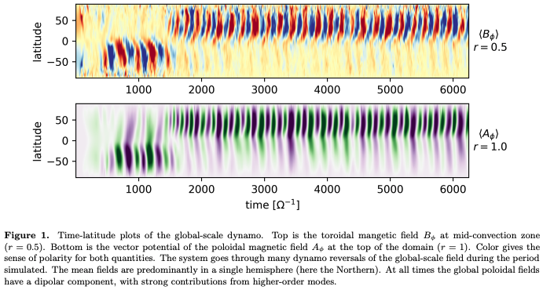
ピックアップ理由: 太陽ダイナモは活発に研究されている気がしますが、M型矮星のダイナモ現象をちゃんと数値計算したものはこれが初めて？と思ったから。半球でのみ起こるダイナモというのも衝撃的でした。
arXivリンク: https://arxiv.org/abs/2008.02362
First Solar energetic particles measured on the Lunar far-side
月の裏側にて太陽から放出された高エネルギー粒子の観測を初めて行なった。その結果、パーカースパイラルに沿った伝搬モデルにそぐわないことが示唆された。ApJL.
ピックアップ理由: 磁気流体の問題として有名なパーカースパイラルとは合わない結果。今後の太陽高エネルギー粒子観測や地球磁気圏物理の発展に期待です。
arXivリンク: https://arxiv.org/abs/2008.03492
Formation of super-strong horizontal magnetic field in delta-type sunspot in radiation magnetohydrodynamic simulations
デルタ型の太陽黒点において超強磁場がなぜできるのかをRMHDシミュレーションで解明。2つの黒点の回転運動によるシアでの磁場増幅、この強磁場はforce-free状態にあること、強磁場の大きさのピーク値は空間分解能などに依存しないことが示された。
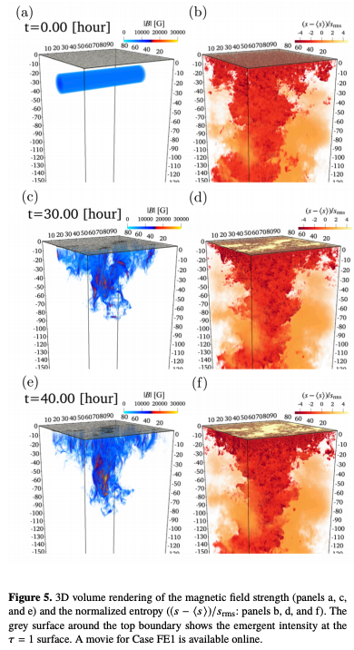 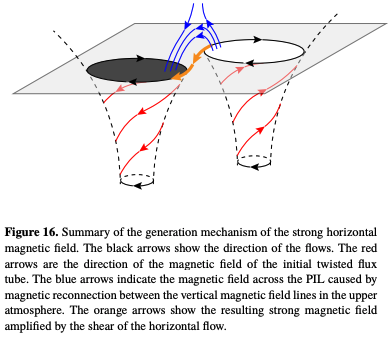
ピックアップ理由: 太陽黒点における強磁場生成現象を解明。現象に対する深い洞察・シミュレーション力がないとできないだろうなぁと思わせる論文です。やっぱり基礎物理はこうでないと面白くありません。
arXivリンク: https://arxiv.org/abs/2008.07741
Magnetic torques on T Tauri stars: accreting vs. non-accreting systems
古典的T Tauri星(CTT)は周辺の円盤と磁場で相互作用を受けており、それが自転運動の進化に影響を及ぼすとされている。2.5次元MHD数値実験の結果、磁気圏放出の存在によって恒星風の膨張を抑制し、恒星風ブレーキがより効率的に起こることを示した。
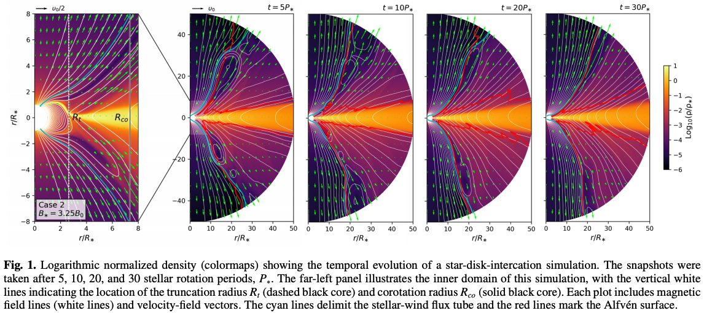
ピックアップ理由: 若い星であるT Tauri星と周囲の円盤との相互作用という、磁気流体好きにはたまらない論文。磁場が恒星の角運動量に作用するという現象もたまらなく好きです。
arXivリンク: https://arxiv.org/abs/2009.00940
The auroral radio emission of the magnetic B-type star rho OphC
磁場を持つB型星rho OphCを電波帯域で多波長観測した論文。観測の結果、この恒星の磁気圏から発せられる、コヒーレントなオーロラ電波放射(Auroral Radio Emission, ARE)の特徴を得た。MNRAS Letters.
ピックアップ理由: 恒星・恒星大気からの放射ではなく、恒星の磁気圏からのオーロラを観測した論文。そんなことできるんだと素直に驚きました。
arXivリンク: https://arxiv.org/abs/2009.02363
Intermediate-Mass Stars Become Magnetic White Dwarfs
若い星団において2つの重くて磁場が卓越した白色矮星を発見。これらの星は単一の星の進化の果てに生まれた可能性が高く、これまでの理論とは異なる。この出現率の高さから、中質量星から磁気白色矮星の一部が作られることを示唆している。ApJL.
ピックアップ理由: 恒星進化は古くからある分野ですが、まだまだ謎な部分が多いです。この論文は白色矮星への進化理論に一石を投じる論文です。
arXivリンク: https://arxiv.org/abs/2009.03374
Full compressible 3D magnetohydrodynamic simulation of solar wind
3DMHDシミュレーションにより高速太陽風(fast solra wind)の加熱メカニズムの解明を試みた研究。アルヴェーン波の散逸により、高温コロナと高速太陽風が同時に発生することが分かった。
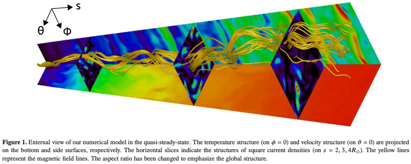
ピックアップ理由: 太陽コロナの加熱過程は未解決問題として知られていましたが、その理論の礎になるのではないかと思われることからピックアップしました。
arXivリンク: https://arxiv.org/abs/2009.03770
Runaway OB Stars in the Small Magellanic Cloud: Dynamical Versus Supernova Ejections
小マゼラン雲において発見されたRunaway OB星の起源解明を試みた論文。解析の結果、連星の片方が超新星爆発することにより起こるシナリオに比べて、力学的に散乱を受けて起こるシナリオの方が頻繁に起こることが示唆された。
ピックアップ理由: 諸説あるランナウェイ星の起源に迫った論文。Gaia EDR3のカタログも公開されたので、さらに発展する分野かもしれません。
arXivリンク: https://arxiv.org/abs/2009.03571
Is GW190521 the merger of black holes from the first stellar generations?
GW190521は初代星から生まれたBH同志の合体かどうかを数値実験で調べた論文。その結果、初代巨星から直接作られるBH質量はにもなり、これらが直接合体したイベントではないかという可能性がでた。MNRAS Letters.
ピックアップ理由: 重力波天文学はまだ始まったばかりですが、GW190512はとのブラックホール同士の合体です。その形成過程を解明しようと初代星の研究が活発になっていることを示す一本になっています。
arXivリンク: https://arxiv.org/abs/2009.06585
The Solar Wind Angular Momentum Flux as Observed by Parker Solar Probe
パーカー・ソーラー・プローブ(PSP)により太陽風の角運動量流束を求めた。太陽の年齢に伴うスピンダウン理論, MHDモデル, 過去の観測は全てergオーダーであったが、今回の結果もそれと同じくらいのergとなった。ApJL.
ピックアップ理由: 観測技術が進歩し、新たな観測衛星が打ち上げられるようになったことを代表する論文の一つ。とりわけ、太陽は身近な天体であるだけに今後も理論研究・予想と観測の両方からその進展が期待されることから、選びました。
arXivリンク: https://arxiv.org/abs/2009.08991
Modeling of Magneto-Rotational Stellar Evolution I. Method and first applications
恒星進化計算において磁場・自転・質量損失・恒星の密度と温度分布変化などの相互作用を自己矛盾なく扱う枠組みを考案。初期スピンと磁場のモデルによってはAp/Bp星の主な観測特徴を再現することに成功。
ピックアップ理由: 特に磁場が卓越した恒星であるAp/Bp星の進化解明に大きく貢献できそうな論文。
arXivリンク: https://arxiv.org/abs/2010.13909
Nonlinear Alfvén Wave Model of Stellar Coronae and Winds from the Sun to M dwarfs
M型矮星の光球面からコロナへのAlfven波非線形伝播を1D計算。これから太陽とM型矮星のコロナ温度・恒星風速度・恒星風の質量損失率を半経験的に求める手法を開発。M型矮星のコロナは太陽よりも低温、恒星風速度と質量損失率も小さいことが判明。ApJL
ピックアップ理由: 1次元の圧縮磁気流体計算からここまでのことができるのかと思い知らされた論文です。M型矮星のコロナ・恒星風にまで波及する、その物理的な理解の深さに脱帽です。
arXivリンク: https://arxiv.org/abs/2012.10868
IM (装置開発・シミュレーション技法分野)
A Proper Discretization of Hydrodynamic Equations in the Cylindrical Coordinates for Astrophysical Simulations
天体物理で用いられる円筒座標系シミュレーションにおける新しい離散化手法の考案。千葉大の方々の論文。
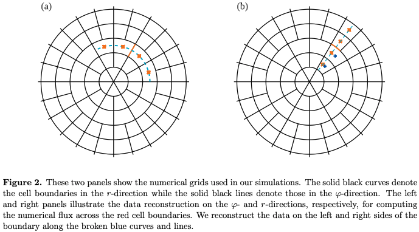 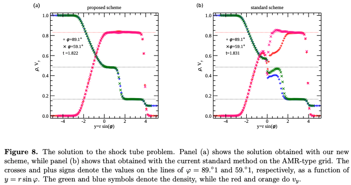
ピックアップ理由: 円筒座標系でのシミュレーションは降着円盤・原始惑星系円盤・銀河円盤の研究などとは切っても切り離せないものです。長い間、それらを研究する上でボトルネックとなっていた部分の解消に大きく貢献する技法開発ということで選びました。
arXivリンク: https://arxiv.org/abs/2012.05618
EP (太陽系・系外惑星系分野)
The White Dwarf Opportunity: Robust Detections of Molecules in Earth-like Exoplanet Atmospheres with the James Webb Space Telescope
WD 1856+534bという白色矮星をトランジットする系外惑星を発見。ApJL.
ピックアップ理由: 白色矮星は、とある質量範囲にある主系列星が赤色巨星の時期を経て、その最後に迎える進化形態です。ということは赤色巨星の時期に飲み込まれずに生き残った惑星ということになります。その形成過程は謎に包まれており、これに関する論文がいくつか出ていたようなので選出しました。
arXivリンク: https://arxiv.org/abs/2009.07274
No phosphine in the atmosphere of Venus
「金星大気にホスフィン(リン化水素)が存在する」とした論文と違う解析を行った結果、ホスフィンが存在しないという結果を得た。Nature Astronomy.
ピックアップ理由: ALMAで金星を観測からホスフィンが存在するとの結果を出した論文に対する反証。最新の観測技術を鵜呑みにせずに異議を訴えるその姿勢からピックアップしました。
arXivリンク: https://arxiv.org/abs/2010.14305
Spiral Arm Pattern Motion in the SAO 206462 Protoplanetary Disk
原始惑星系円盤内に生じる渦状腕の発生機構を研究。2つの腕が共通の運動をするのは86auの円運動惑星が駆動するもので重力不安定によるものではない。2つの腕が別々の運動をするのは120auと49auの2つの惑星によって駆動されていることが判明。ApJL
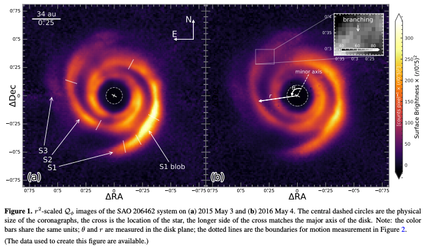 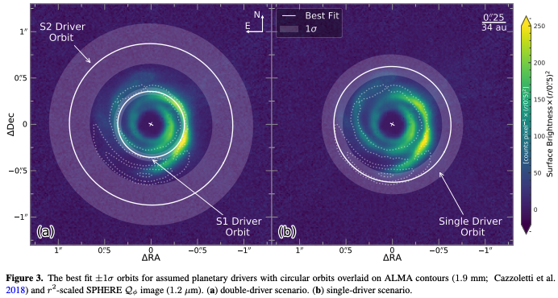
ピックアップ理由: 原始惑星系円盤において、なぜ渦状腕ができるかを追求した論文。その起源にはいくつか考えられていましたが、それに決着をつけるかもしれないインパクトを持つことから選出しました。
arXivリンク: https://arxiv.org/abs/2012.05242
CO (宇宙論分野)
Learning effective physical laws for generating cosmological hydrodynamics with Lagrangian Deep Learning
Lagrangian Deep Learning(LDL)を用いて宇宙論的流体数値計算のための物理法則を学習したもの。LDLの計算コストは数値計算よりも4桁低いが、同じ解像度以上のものを行うことができた。大規模DM数値計算をがなくても観測を説明できるようになるだろう
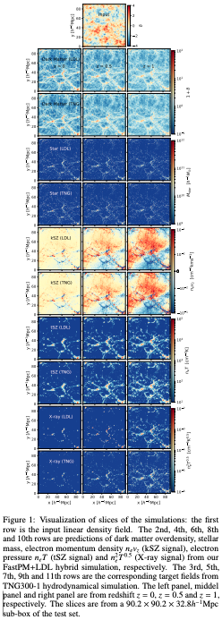
ピックアップ理由: 機械学習の可能性を感じさせる論文。特に宇宙論分野での機械学習応用が多いなかで、物理法則を学習させるという衝撃的な内容だったことから選出しました。
arXivリンク: https://arxiv.org/abs/2010.02926
Fast magnetic field amplification in distant galaxyclusters
宇宙年齢が現在の半分のときの大質量銀河団を電波観測。大きな電波輝度からこれらのサンプル銀河団ではすでに現在の銀河団と同じような磁場強度を持っており、銀河団形成初期には磁場増幅が速いことが示唆。Nature Astronomy
ピックアップ理由: 宇宙論において重要な観測対象である銀河団、その磁場増幅モデルに一石を投じる観測結果であることからピックアップしました。
arXivリンク: https://arxiv.org/abs/2011.01628
First multi-redshift limits on post-Epoch of Reionization (post-EoR) 21 cm signal from z = 1.96 - 3.58 using uGMRT
再電離後(z<6)のHI 21cm背景放射のゆらぎを測定することは大規模構造や銀河進化を理解する有効な手段。この論文ではz=1.96-3.58の21cmパワースペクトルを観測から推定。初めてこの赤方偏移における厳しい上限値を求めた。ApJL.
ピックアップ理由: 21cm線は今後SKAによって観測の可能性が広がる分野です。今回は再電離後の21cmパワースペクトルでしたが、再電離前のダークエイジ(暗黒時代)の理解が進んだときにこの制限がどのように効いてくるのかという発展性を見込んで、ピックアップしました。
arXivリンク: https://arxiv.org/abs/2012.04674
GA (銀河・銀河団・星間現象分野)
Cold gas in the Milky Way's nuclear wind
天の川銀河中心から吹き出す冷たい分子雲アウトフローを観測。他の銀河で見られた温かいガスと冷たいガスの多相アウトフローを示すことができた。銀河中心部の星形成にも大きな影響を与えていることが示唆されている。Nature.
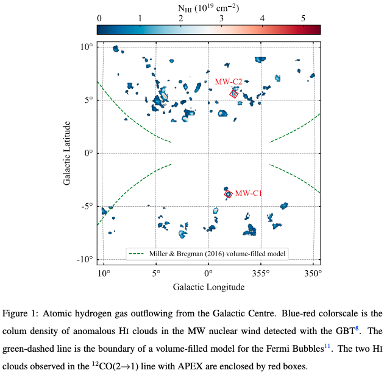
ピックアップ理由: 天の川銀河中心のBH観測に関する業績がノーベル物理学賞をもたらしたことは記憶に新しいですが、この論文はそこから吹き出すアウトフローを研究したもの。SMBHが銀河に及ぼす影響をより詳細に観測したこともそうですが、何より天の川銀河SMBHアウトフローの分子雲がこれまで見つかっていなかったというのも驚いた記憶があります。
arXivリンク: https://arxiv.org/abs/2008.09121
The Relative Role of Bars and Environments in AGN Triggering
SDSSの近傍銀河データから棒状構造がAGNの活動に与える影響を調べたもの。棒状構造が起因となった中心領域へのガスの流入は、外部の銀河間相互作用や銀河団ガスからの影響よりも大きいことがわかった。ApJL.
ピックアップ理由: AGNの活動性を左右するガス供給についての論文。棒状構造により角運動量を失った星間ガスが内側に落ちていくことは存じておりましたが、どれくらいの影響があるのかを調べた研究という意味でインパクトが大きかったので選出しました。
arXivリンク: https://arxiv.org/abs/2008.13100
A dynamically cold disk galaxy in the early Universe
z~4.2の銀河で、力学的には冷たいが星形成は活発で回転運動をしている銀河を発見。少なくともこの時代には、近傍宇宙で観測されているのと同じようなダイナミクスの銀河がすでに形成されていることが分かった。Nature.
ピックアップ理由: 銀河進化理論に大きな影響を与える観測結果を示した論文だったことから選出しました。
arXivリンク: https://arxiv.org/abs/2009.01251
The Magellanic Corona and the formation of the Magellanic Stream
天の川銀河に落下するマゼラン雲の流体数値実験にMagellanic Corona(LMC周囲に存在する5x10^5Kのガス)を入れることでMagellanic Streamとリーディングアームを再現することを示した。Nature.
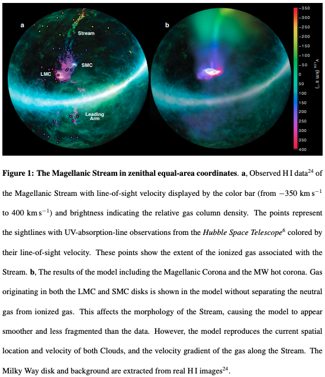 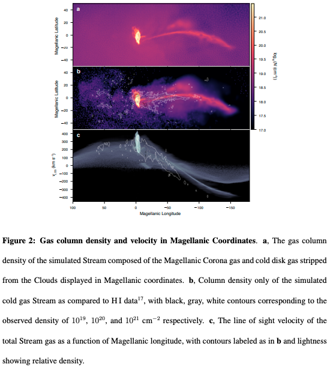
ピックアップ理由: マゼランストリームには、先行するリーディングアームと後ろに付随するトレーリングアームがありますが、これらの形成過程には諸説ありました。このシミュレーション結果はその理論に大きな影響を与えると考えたため、選出しました。
arXivリンク: https://arxiv.org/abs/2009.04368
Cosmological 3D HI Gas Map with HETDEX Lyα Emitters and eBOSS QSOs at z=2: IGM-Galaxy/QSO Connection and a ∼ 40-Mpc Scale Giant HII Bubble Candidate
HETDEXのLyαエミッターデータとeBOSSのz=2.1~2.5のQSOのデータを用いて、銀河間空間のHIガスの3次元分布マップを作成。40Mpc程度の巨大なHIIバブルの候補が見つかった。
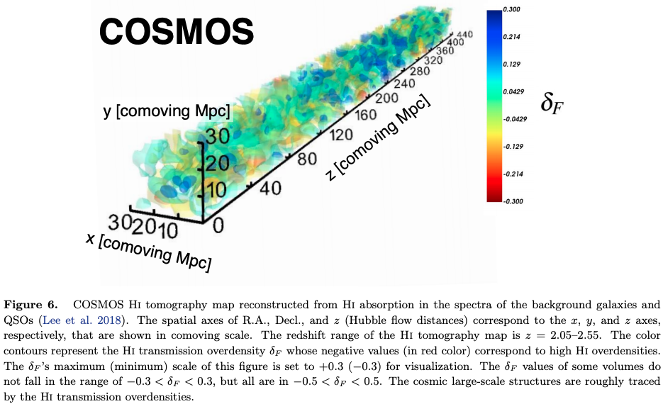 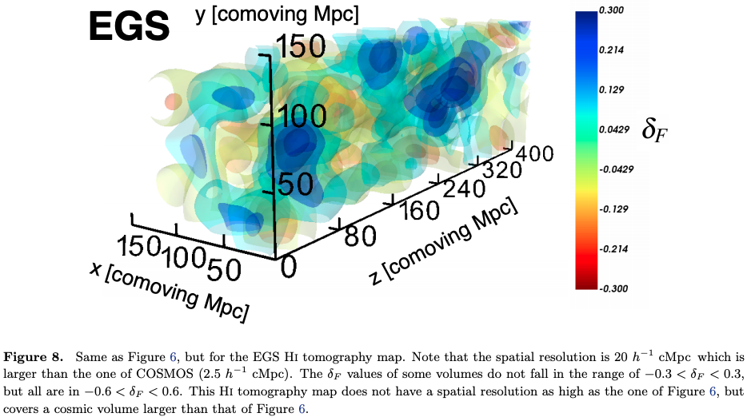
ピックアップ理由: 銀河団の典型的な大きさがおよそMpcスケールです。それよりも10倍程度大きいHIIバブルを発見したという衝撃的な論文です。遠方銀河の周辺環境と、それが銀河進化に与える影響の研究に大きな貢献をするだろうことから、選出させていただきました。
arXivリンク: https://arxiv.org/abs/2009.07285
The principle of maximum entropy explains the cores observed in the mass distribution of dwarf galaxies
CDM数値実験では銀河の中心部分の質量分布はカスプ、そして矮小銀河の観測からはコアであることが知られている。統計力学的な手法を導入したところ、Tsallisエントロピー最大の分布が矮小銀河のコア分布を説明できることが分かった。A&A Letters.
ピックアップ理由: コア・カスプ問題と呼ばれる長年の未解決問題を説明しようと試みた理論論文。銀河動力学において安定な分布をエントロピーから求めるという、基礎物理の深い理解が得られる面白い論文であることから選出しました。
arXivリンク: https://arxiv.org/abs/2009.08994
HE (高エネルギー現象分野)
RGS Observations of Ejecta Knots in Tycho's Supernova Remnant
XMM-Newton/RGS観測によりTycho SNRにエジェクタノットを発見。しかし、これを説明するためのIa型超新星のモデルはまだ見つかっていない。ApJL.
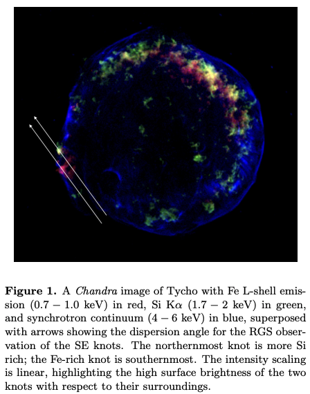 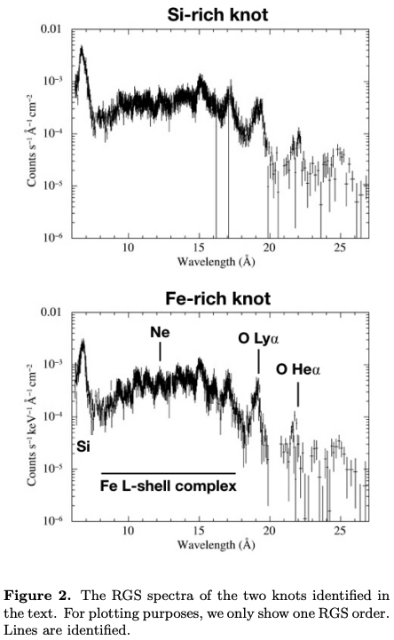
ピックアップ理由: Ia型超新星は白色矮星が迎える最期と言われています。Tycho超新星残骸はほぼ球対称な構造を持つことで有名ですが、この論文はそこにジェットの成分を発見しました。白色矮星の爆発直前・爆発中・爆発直後に何が起こったのか、今後の理論モデルや数値計算に期待を込めて、ピックアップさせていただきました。
arXivリンク: https://arxiv.org/abs/2007.11633
Understanding FRB 200428 in the synchrotron maser shock model: consistency and possible challenge
FRB 200428をマグネター磁気圏で起こったシンクロトロン・メーザー放射で説明した論文。これを用いれば電波の連続放射成分をマグネター風星雲モデルでよく説明することができる。ApJL.
ピックアップ理由: コヒーレント放射であるFRBをシンクロトロン・メーザー不安定性で解決しようとしたもの。シンクロトロンという単語は私を魅了して止みません。
arXivリンク: https://arxiv.org/abs/2008.05635
Detection of a possible multiphase ultra-fast outflow in IRAS 13349+2438 with NuSTAR and XMM-Newton
クェーサーにおいて2つの鉄吸収線とそれに付随してアウトフローによる青方偏移が見つかった。これはBHの近くでは高速で高い電離度の物質、遠くでは遅くて冷たい物質が観測されるという、放射状アウトフローシナリオと一致する。MNRAS Letters.
ピックアップ理由: 宇宙遠方にあるQSO、そこから出るアウトフローを観測した論文。SMBHが作るアウトフローの理論に観測から制限をかけた、そのインパクトからピックアップしました。
arXivリンク: https://arxiv.org/abs/2008.05965
The NANOGrav 12.5-year Data Set: Search For An Isotropic Stochastic Gravitational-Wave Background
12.5年のパルサータイミングデータを用いて、等方確率的重力波背景放射(Graviational Wave Backgroud, GWB)を調べた論文。四重極の空間相関の統計的有意性は見出せなかった。また単極・双極子成分も見出せなかった。ApJL.
ピックアップ理由: 重力波観測により様々なことが判明しましたが、これは重力波統計を用いてSMBH連星が宇宙にどのように分布しているかを調べたものです。今後もこのような観測・解析論文が続々出てくることだろうという期待から、ピックアップしました。
arXivリンク: https://arxiv.org/abs/2009.04496
A Jet-Bases Emission Model of the EHT 2017 Image of M87*
一般相対論的レイ・トレーシング輻射輸送数値計算を行ったところ、ジェットファンネルの停留面に発生する電子・陽電子プラズマリングが出す放射により、EHT2017で観測されたM87のSMBHのリング画像を説明することができた。ApJL.
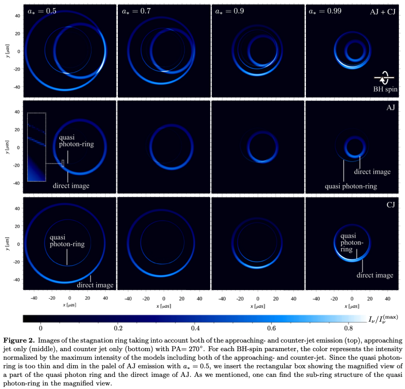 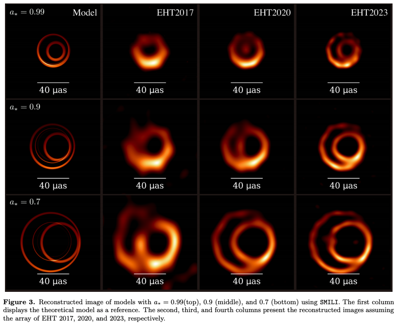
ピックアップ理由: EHTにより直接撮像されたM87*ですが、その画像には議論の余地が残っています。その画像を説明する理論の一つとしてジェットを考えた、そのインパクトからピックアップさせていただきました。
arXivリンク: https://arxiv.org/abs/2009.08641
Stratified Global MHD Models of Accretion Disks in Semi-Detached Binaries
ロッシュローブからガス供給がある降着円盤を3DMHD数値実験で示した論文。円盤内側のエッジ軌道マッハ数が5・10のモデル計算したところ、マッハ5モデルは準定常状態に、マッハ10モデルは連星軌道周期の10周期くらいで磁気駆動降着イベントが起こる。
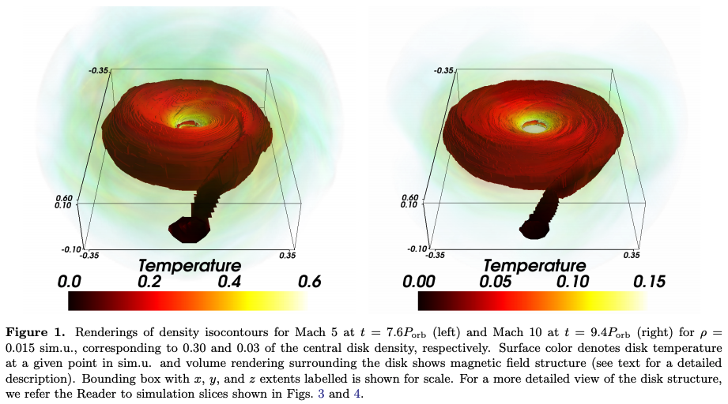 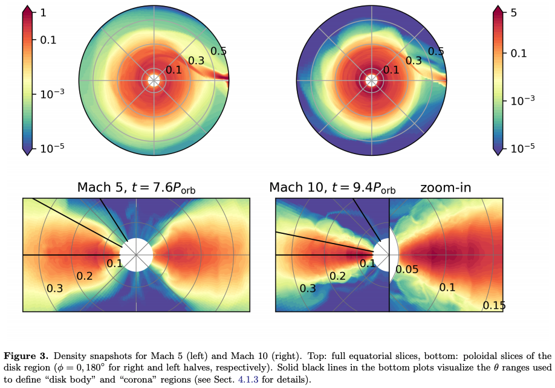 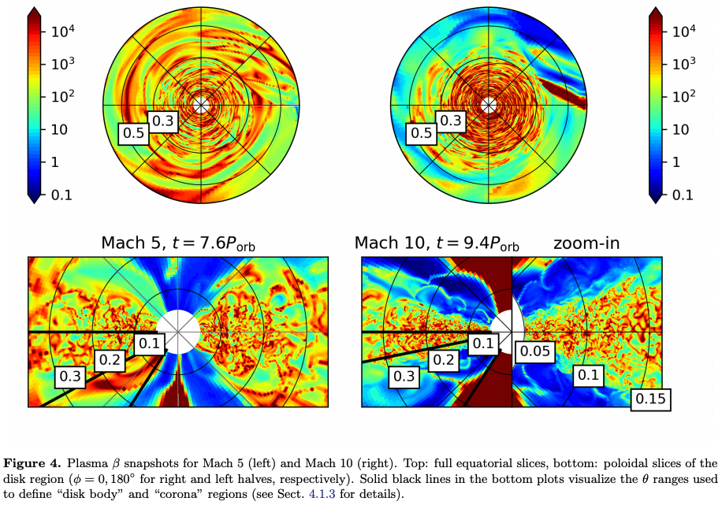 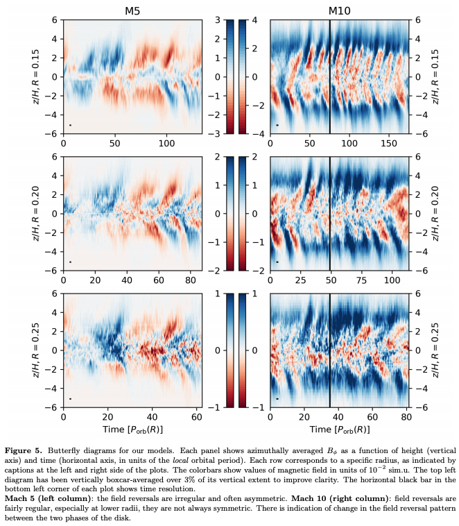
ピックアップ理由: 降着円盤それ自身のみの進化を数値計算した論文はたくさんありますが、これはロッシュローブからの物質流入から円盤の進化までを全て行った論文です。軌道マッハ数によって円盤の進化の様子やバタフライダイアグラムが異なるの非常に面白く、ピックアップさせていただきました。
arXivリンク: https://arxiv.org/abs/2010.00576
A unified accreting magnetar model for long-duration gamma-ray bursts and some stripped-envelope supernovae
Long-Duration GRBs(LDGRBs)とType I Superluminous SN(SLSNe-I)は中心のマグネターによって駆動されることが判明。降着率によってコリメートされたマグネター風やSLSNe-Iになったりする。ApJL.
ピックアップ理由: GRBやSNeの多様性にはいろいろな議論がなされていますが、それをマグネターの降着率で解決しようと試みた論文。降着率変化がどのように起こるのか、今後の理論に期待という意味でピックアップさせていただきました。
arXivリンク: https://arxiv.org/abs/2010.10101
Diverse polarization angle swings from a repeating fast radio burst source
FRB 180301からの15個のバーストについて偏光を解析したところ、そのうちの7つのバーストで様々な偏光角の変化を得た。この結果はFRBの起源が磁気圏から来ることと一致し、相対論的衝撃波からの放射モデルを否定する。Nature
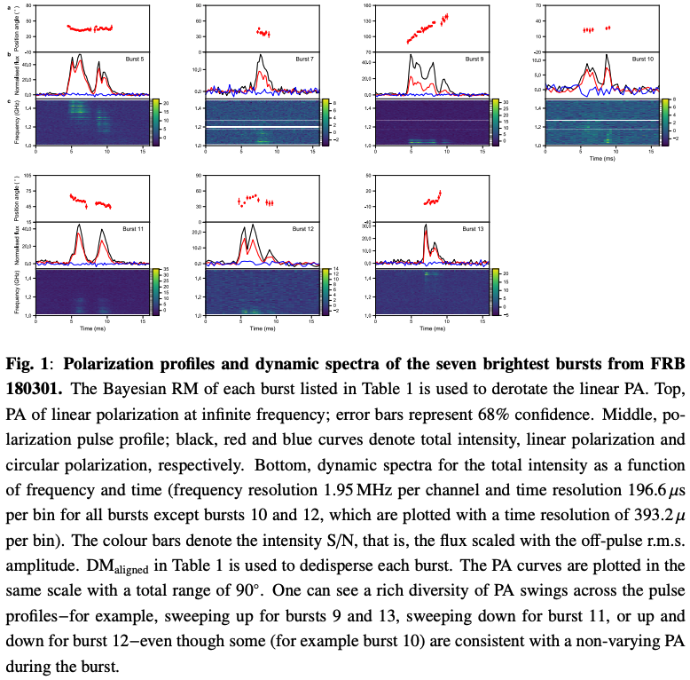 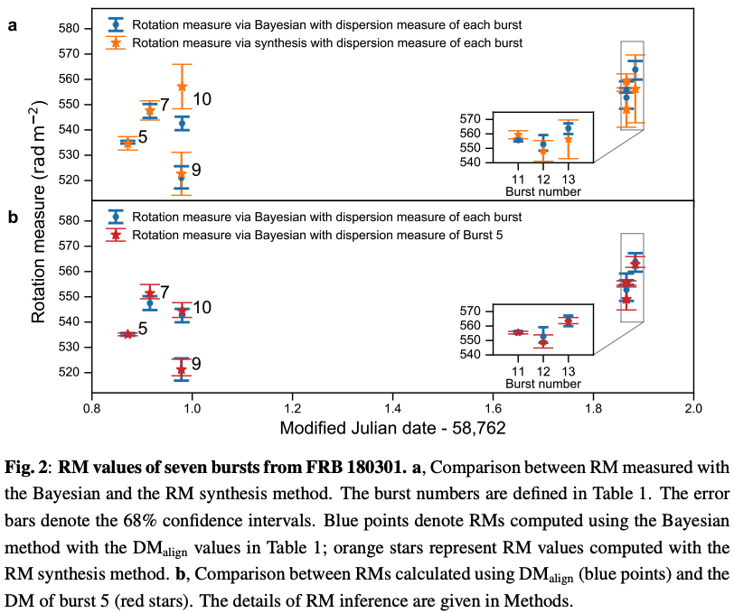
ピックアップ理由: FRBは謎が多い天体です。その起源はまだ世界中が議論をしている最中ですが、この観測により1つのモデルが棄却されました。今後もこのような論文が出ることで一歩ずつ、FRBの理解に踏み込んでいくだろうという将来性から、この論文をピックアップしました。
arXivリンク: https://arxiv.org/abs/2011.00171
Magnetic flux inversion in a peculiar changing look AGN
Changine-Look AGNは磁気円盤の降着速度の変化と磁束反転によって説明できると主張。初期と反対向きの磁場が移流することでUV・可視光輝度が上昇し、BHに到達するとX線輝度の低下をもたらすことが判明。MNRAS Letters.
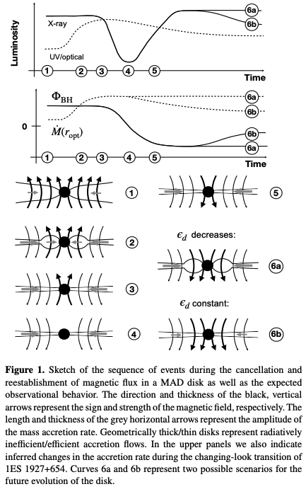
ピックアップ理由: Changing-Look AGN (CLAGN)は数年という短いタイムスケールで連続放射が増光・減少したり、Broad Emission Lineが出現・消失したりするAGNです。SMBHに付随する降着円盤の降着速度変化と磁束反転というリーズナブルな考え方からこの現象を説明できるという部分に興味を覚えたので、ピックアップしました。
arXivリンク: https://arxiv.org/abs/2011.01954
Dynamical effects of cosmic rays leaving their sources
CRsのストリーミング不安定性を励起させることで、銀河系内でCR拡散が抑制された空洞がCR源の周囲に形成されることをPICシミュレーションで明らかにした。Phys. Rev. Letters.
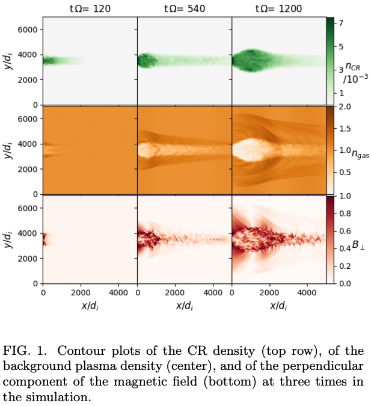 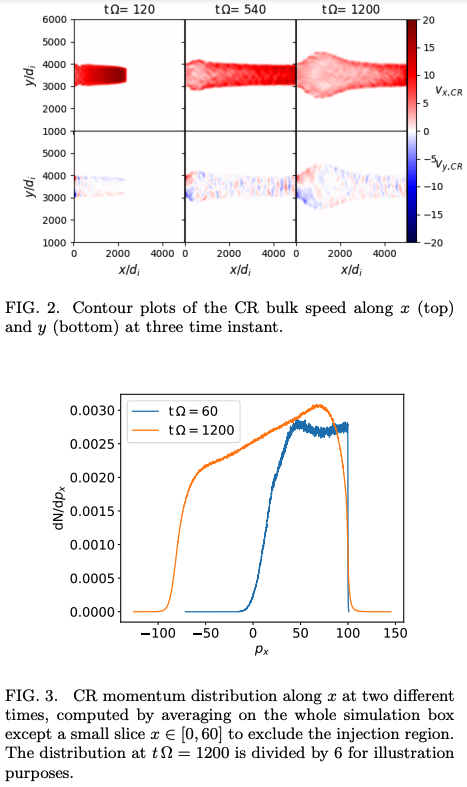
ピックアップ理由: 宇宙線(CRs)のある伝搬を仮定して銀河系内にCRsがどのように分布しているかを計算するコードがありますが、この結果はそれらに多大な影響を及ぼすインパクトがあります。PICシミュレーションの可能性も伺わせる、その新規性からピックアップしました。
arXivリンク: https://arxiv.org/abs/2011.02238
A first-principle simulation of blast wave emergence at the photosphere of a neutron star merger
相対論的アウトフローの光球面での輻射媒介衝撃波の第一原理数値計算コードを用いて中性子星連星合体GW170817からの輻射爆風波を計算したところ、GRB170817Aに似た光度曲線・スペクトル変化を再現することに成功。ApJL.
ピックアップ理由: 線バースト(GRBs)の起源は未だに未解明な部分が多いですが、今回のこの論文計算結果はGRBの起源が連星中性子星合体によるものであるという説を指示するものです。議論の余地はまだまだありますが、第一原理計算からこのような結果が導かれたことに興奮を覚えたことから、ピックアップさせていただきました。
arXivリンク: https://arxiv.org/abs/2012.01798
Two-dimensional Particle-in-Cell simulations of axisymmetric black hole magnetospheres
2D PIC数値計算から高速回転BH磁気圏を研究。一様な対生成と質量降着率がエディントン限界よりも十分小さいとき、BH回転エネルギーは中緯度から優先的に抽出されることが判明。このような環境では中性プラズマを保てず、磁気流体近似は誤りと指摘。
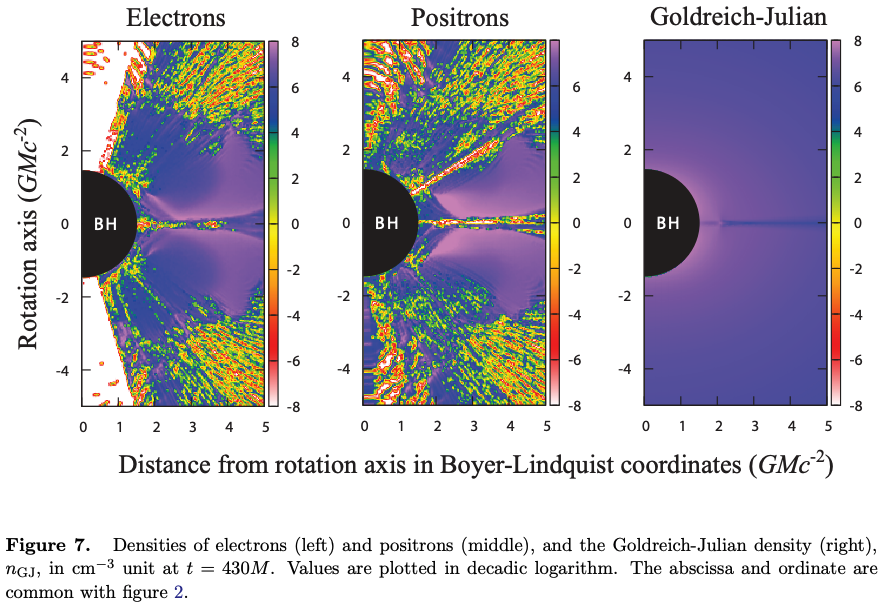 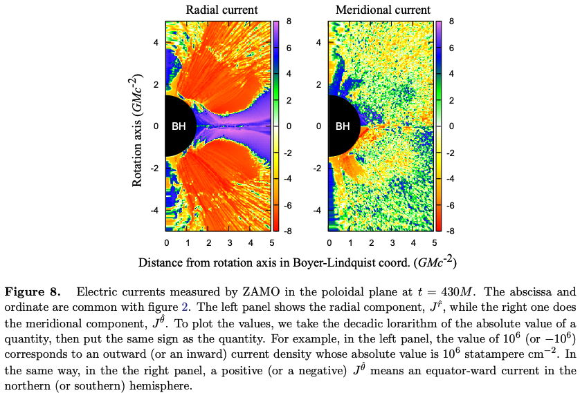
ピックアップ理由: Kerr BH磁気圏という極限環境の物理をPICで研究したものです。GRMHDシミュレーションなどは頻繁に目にしますが、PICでの結果は新鮮に感じました。磁気流体近似が成り立たないという、言われてみればそうかもと思わせる結果にも深く納得したことからピックアップさせていただきました。
arXivリンク: https://arxiv.org/abs/2012.07229
統計情報
ここで、2020年にastro-phに掲載された論文の統計データを確認しましょう。
論文数推移
2020年にastro-phで最も引用された論文
ここでは2020年に多く引用された論文のランキングを掲載します。
Planck 2015 results. XIII. Cosmological parameters
CMB観測衛星であるPlanckにより宇宙論パラメータが求められた論文が堂々の第1位。引用数は1889。
arXivリンク: https://arxiv.org/abs/1502.01589
Planck 2018 results. VI. Cosmological parameters
CMB観測衛星であるPlanckにより宇宙論パラメータが求められた論文。先ほどと同じ内容だが、2018年に出たデータにより推定されたもの。引用数は1876。
arXivリンク:
Observational evidence from supernovae for an accelerating universe and a cosmological constant
遠方で起こったIa型超新星を用いて宇宙の加速度膨張を示した論文。2011年にノーベル物理学賞を受賞したRiessとSchmidtのもの。引用数は994。
arXivリンク: https://arxiv.org/abs/astro-ph/9805201
Measurements of $\Omega$ and $\Lambda$ from 42 high redshift supernovae
こちらも遠方のIa型超新星から宇宙論パラメータを推定した論文。2011年にノーベル物理学賞を受賞したPerlmutterが第一著者。引用数は942。
arXivリンク: https://arxiv.org/abs/astro-ph/9812133
Multi-messenger Observations of a Binary Neutron Star Merger
LIGO/Virgoによって発見された連星中性子星からの重力波。それを様々な望遠鏡を用いて追観測を行った、マルチメッセンジャー天文学の論文。引用数は677。
arXivリンク: https://arxiv.org/abs/1710.05833
結言
2020年の後半から毎日、新聞を読む感覚で寝る前に1時間ほどかけてAbstractを読み進めるという活動。これを通して、宇宙物理の最先端研究とそれに付随する知識、さらに世界の研究トレンドをご紹介させていただきました。